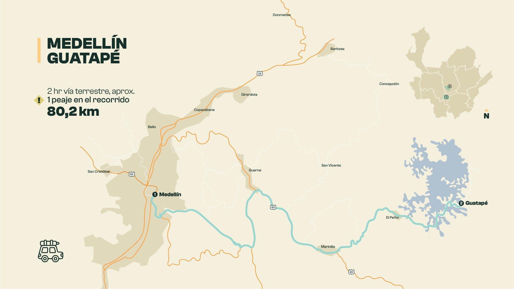
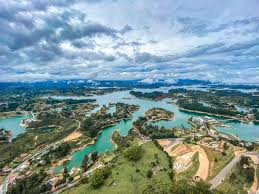

Guatapé
Guatapé es un colorido pueblo en Antioquia, famoso por sus zócalos decorativos.
También es hogar de la Piedra del Peñol, que ofrece vistas panorámicas espectaculares.
Ubicación: Antioquia, Colombia

Clima: Templado, promedio de 18°C

Actividades: Natación, buceo, pesca, senderismo